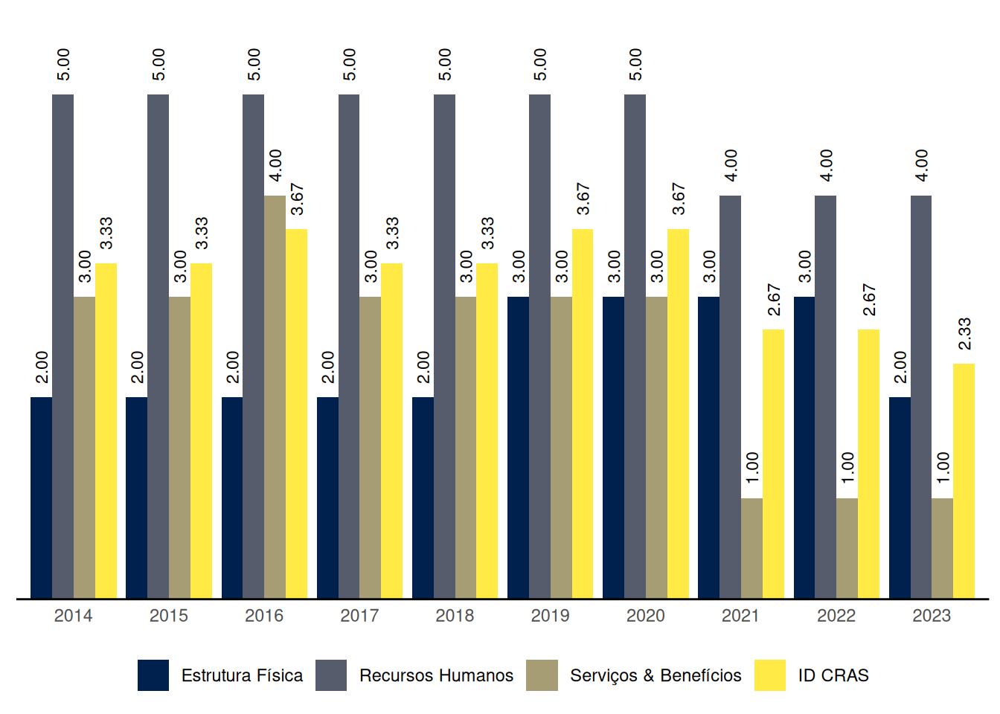
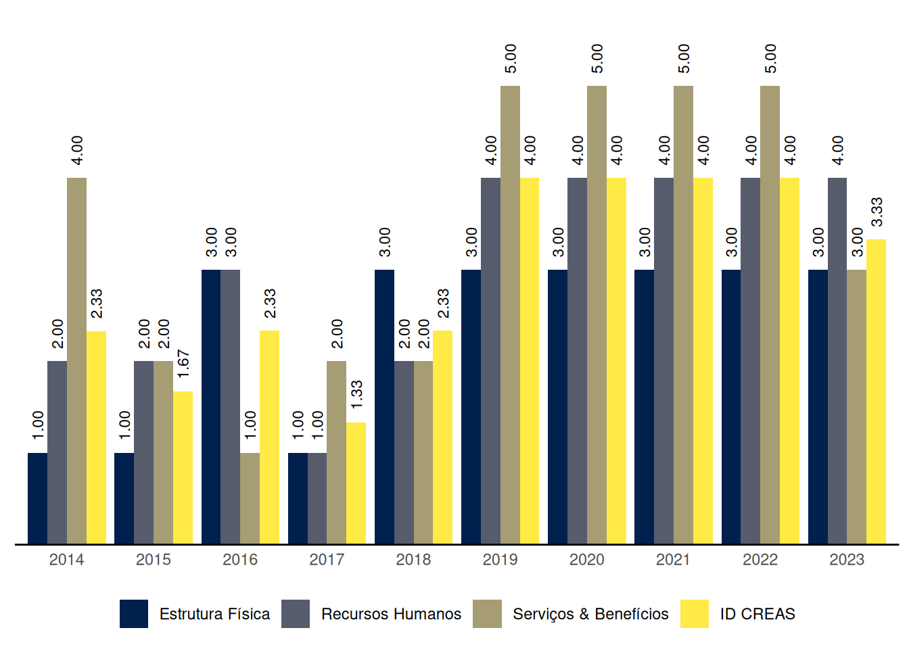

Jundiá
Relatório de Indicadores 2023 do município de Jundiá, Alagoas
1 ID CRAS: Índice de Desenvolvimento do CRAS
O ID CRAS é um indicador composto por três dimensões. Cada dimensão possui uma nota na qual quanto mais próxima de 5, melhor o índice e, do contrário, insatisfatório.
O Gráfico 1 mostra a evolução das médias do ID CRAS ao longo dos anos no município de Jundiá, Alagoas.
| Capacidade de até: | Quantidade |
|---|---|
| 2.500 famílias referenciadas | 1 |
| 3.500 famílias referenciadas | 0 |
| 5.000 famílias referenciadas | 0 |
As seções a seguir apresentam os resultados do município de Jundiá em cada uma das dimensões do ID CRAS, bem como os requisitos para se alcançar os níveis superiores.
1.1 ID CRAS: Dimensão Estrutura Física
1.1.1 CRAS com capacidade de referenciamento para até 2.500 ou 3.500 famílias
Na dimensão Estrutura Física, o nível de ID do CRAS com capacidade de referenciamento para até 2.500 ou 3.500 famílias no município de Jundiá é 2.
O CRAS de nível 2, com capacidade de referenciamento para até 2.500 ou 3.500 famílias, na dimensão Estrutura Física:
- Possui no mínimo 2 salas de atendimento; e
- Possui pelo menos 1 banheiro.
Para alcançar o nível 3 na dimensão Estrutura Física, o CRAS com capacidade de referenciamento para até 2.500 ou 3.500 famílias precisa, além dos requisitos do nível 2:
- Possuir recepção; e
- Possuir acessibilidade, ao menos parcial.
1.1.2 CRAS com capacidade de referenciamento para até 5.000 famílias
Jundiá não tem CRAS com capacidade de referenciamento para até 5.000 famílias.
1.2 ID CRAS: Dimensão Recursos Humanos
1.2.1 CRAS com capacidade de referenciamento para até 2.500 famílias
Na dimensão Recursos Humanos, o nível de ID do CRAS com capacidade de referenciamento para até 2.500 famílias no município de Jundiá é 4.
O CRAS de nível 4, com capacidade de referenciamento para até 2.500 famílias, na dimensão Recursos Humanos:
- Possui no mínimo 4 (7, se EV) profissionais, sendo pelo menos 3 (5, se EV) com nível superior; e
- Possui no mínimo 1 Assistente Social (2, se EV); e
- Possui coordenador com nível superior.
Para alcançar o nível 5 na dimensão Recursos Humanos, o CRAS com capacidade de referenciamento para até 2.500 famílias precisa, além dos requisitos do nível 4:
- Possuir no mínimo 5 (9, se EV) profissionais (sendo pelo menos 3 (5, se EV) com nível superior); e
- Possuir no mínimo 1 Psicólogo; e
- Possuir no mínimo 1 profissional de nível superior com vínculo estatutário ou empregado público celetista.
1.2.2 CRAS com capacidade de referenciamento para até 3.500 famílias
Jundiá não tem CRAS com capacidade de referenciamento para até 3.500 famílias.
1.2.3 CRAS com capacidade de referenciamento para até 5.000 famílias
Jundiá não tem CRAS com capacidade de referenciamento para até 5.000 famílias.
1.3 ID CRAS: Dimensão Serviços & Benefícios
Na dimensão Serviços & Benefícios, o nível de ID do CRAS no município de Jundiá é 1.
O CRAS de nível 1 na dimensão Serviços & Benefícios em município de porte Pequeno I:
- Não realiza alguma(s) das seguintes atividades essenciais do PAIF: acompanhamento de famílias, e/ou grupo/oficina com famílias, e/ou visitas domiciliares, e/ou orientação; ou
- Possui articulação frágil ou inexistente com os Serviços de Educação e com os Serviços de Saúde; ou
- Não possui profissionais de Serviço Social nem de Psicologia.
Para alcançar o nível 2 na dimensão Serviços & Benefícios, o CRAS em município de porte Pequeno I precisa:
- Executar o PAIF, realizando no mínimo as seguintes atividades: acompanhamento de famílias, grupo/oficina com famílias e visitas domiciliares; e
- Possuir forte articulação com pelo menos um dos seguintes Serviços: Serviços de Educação e Serviços de Saúde.
2 ID CREAS: Índice de Desenvolvimento do CREAS
O ID CREAS é um indicador composto por três dimensões. Cada dimensão possui uma nota na qual quanto mais próxima de 5, melhor o índice e, do contrário, insatisfatório.
O Gráfico 2 mostra a evolução das médias do ID CREAS ao longo dos anos no município de Jundiá, Alagoas.

As seções a seguir apresentam os resultados do município de Jundiá em cada uma das dimensões do ID CREAS, bem como os requisitos para se alcançar os níveis superiores.
2.1 ID CREAS: Dimensão Estrutura Física
Na dimensão Estrutura Física, o nível de ID do CREAS no município de Jundiá é 3.
O CREAS de nível 3 na dimensão Estrutura Física em município de porte Pequeno I:
- Possui no mínimo 3 salas (atendimento e/ou administrativa); e
- Possui recepção; e
- Possui no mínimo 1 banheiro; e
- Possui acessibilidade, ao menos parcial.
Para alcançar o nível 4 na dimensão Estrutura Física, o CREAS em município de porte Pequeno I precisa, além dos requisitos do nível 3:
- Possuir no mínimo 2 banheiros; e
- Possuir 1 ou mais computadores com Internet; e
- Possuir veículo próprio ou compartilhado; e
- Possuir 3 salas ou mais para atendimento (5 se CREAS Regional).
2.2 ID CREAS: Dimensão Recursos Humanos
Na dimensão Recursos Humanos, o nível de ID do CREAS no município de Jundiá é 4.
O CREAS de nível 4 na dimensão Recursos Humanos em município de porte Pequeno I:
- Possui no mínimo 1 Advogado; e
- Possui Coordenador com nível superior; e
- Tem quantidade total de trabalhadores (nível superior e médio) maior ou igual a 5 (10, se CREAS Regional), sendo no mínimo 4 (6, se CREAS Regional) deles de nível superior; e
- Possui no mínimo 1 Assistente Social e 1 Psicólogo (além disso, se for CREAS Regional, o total de Assistentes Sociais mais Psicólogos deve ser maior ou igual a 4).
Para alcançar o nível 5 na dimensão Recursos Humanos, o CREAS em município de porte Pequeno I precisa, além dos requisitos do nível 4:
- Ter quantidade total de trabalhadores (nível superior e médio) maior ou igual a 7 (14, se CREAS Regional, sendo neste caso no mínimo 7 de nível superior); e
- Se for CREAS Regional, possuir no mínimo 2 Assistentes Sociais; e
- Se for CREAS Regional, possuir no mínimo 2 Psicólogos; e
- Possuir no mínimo 1 (2, se CREAS Regional) trabalhador de nível superior com vínculo estatutário ou empregado público celetista.
2.3 ID CREAS: Dimensão Serviços & Benefícios
Na dimensão Serviços & Benefícios, o nível de ID do CREAS no município de Jundiá é 3.
O CREAS de nível 3 na dimensão Serviços & Benefícios em município de porte Pequeno I:
- Oferta o PAEFI assegurando a realização, pelo menos, das seguintes atividades: Entrevistas de acolhida para avaliação inicial dos casos, Atendimento psicossocial individual/familiar, Construção de Plano Individual e/ou Familiar de atendimento, Visitas domiciliares e Elaboração de relatórios técnicos sobre casos em acompanhamento; e
- Possui forte articulação com o CRAS e com o Conselho Tutelar; e
- Oferta atendimento para variadas situações de violência ou violação de direitos e para os diferentes ciclos de vida; e
- Oferta o Serviço de MSE (APLICA-SE SOMENTE SE O MUNICÍPIO RECEBER COFINANCIAMENTO ou se for CREAS Regional).
Para alcançar o nível 4 na dimensão Serviços & Benefícios, o CREAS em município de porte Pequeno I precisa, além dos requisitos do nível 3:
- Ofertar o PAEFI assegurando a realização da atividade de Atendimento psicossocial em grupo (além da realização das atividades exigidas no nível 3); e
- Ter quantidade média de casos em acompanhamento no mês, dividida pela equipe técnica (AS + PSI) menor ou igual a 50 casos; e
- Ofertar o Serviço de MSE assegurando a elaboração do Plano Individual de Atendimento (PIA) do adolescente (APLICA-SE SOMENTE SE O MUNICÍPIO RECEBER COFINANCIAMENTO ou se for CREAS Regional); e
- Ofertar o Serviço de Abordagem ou ter o Serviço referenciado (APLICA-SE SOMENTE SE O MUNICÍPIO RECEBER COFINANCIAMENTO ou se for CREAS Regional).